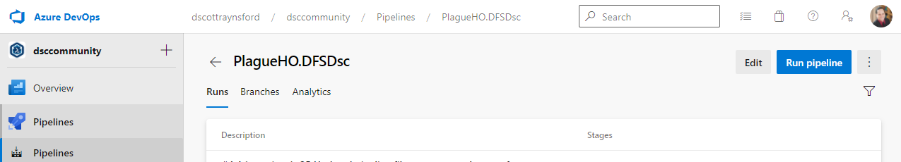
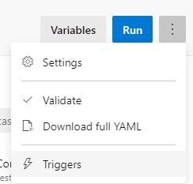
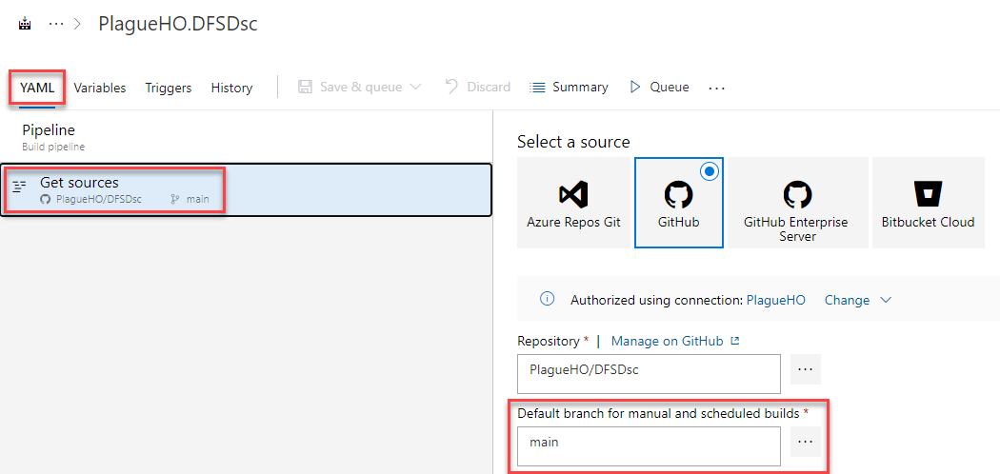
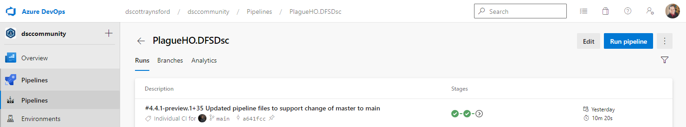
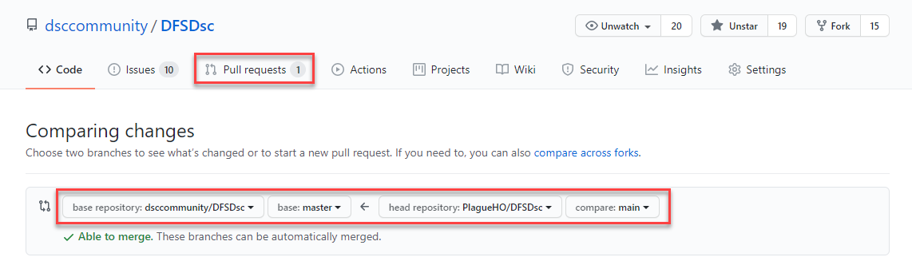
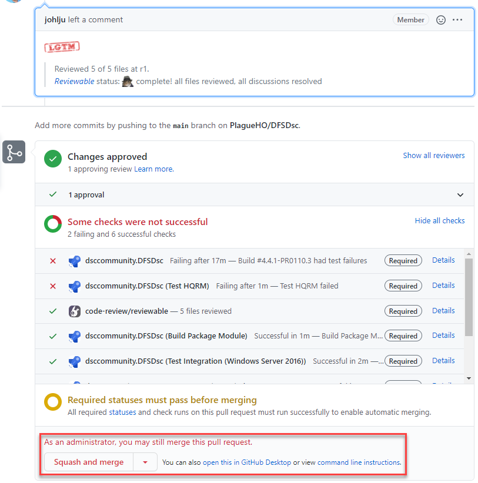
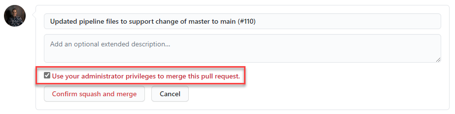
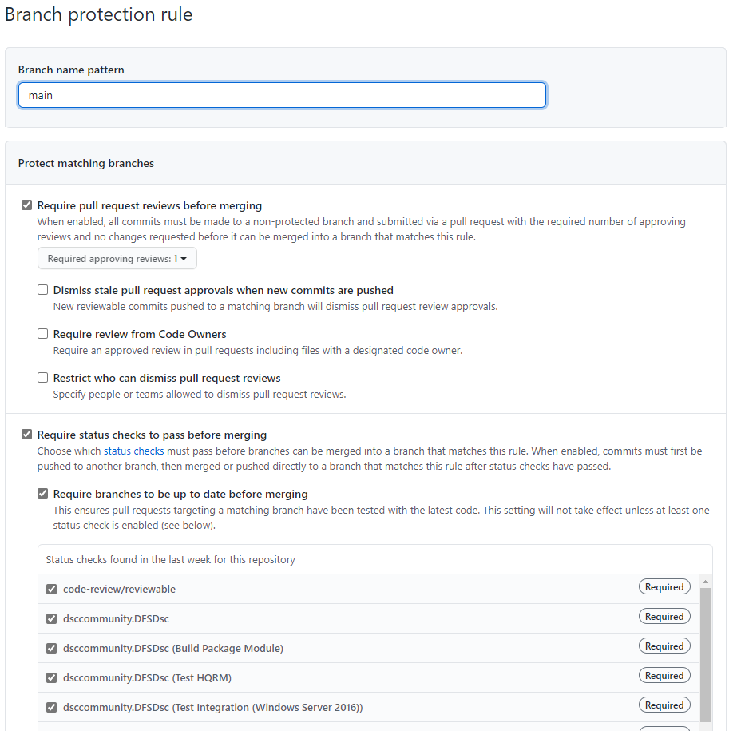
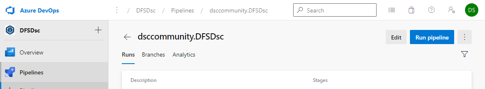
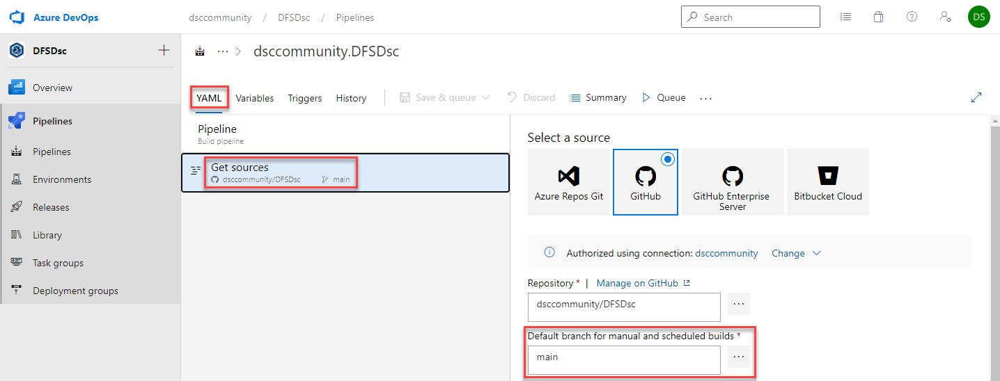

This guide walks you through renaming the master branch to main for DSC Community resource repositories, covering GitHub settings, Azure DevOps pipeline updates, and branch protection policies.
On the 1st of October 2020, GitHub announced
that the default branch name for new repositories was changing from master
to main. You are welcome to share any comments or issues you having around this
process in the Discord or Slack #DSC channel.
Prerequisites
It is assumed that the DSC module repository is already using the DSC module Plaster template in the Sampler project, or has been converted to use the new CI pipeline using the steps mentioned in Steps to convert a module for continuous delivery.
This blog post focuses on resources hosted in the dsccommunity.org, GitHub organization, so many of the steps will refer to this location. However, this process may still work with resources that are not located in this GitHub organization.
Requirements
To perform the rename of a master branch to main for a DSC community
resource the following are required:
- GitHub
Adminaccess to the repository in dsccommunity.org. - Azure DevOps
administratoraccess to the DSC Community CI pipeline for the repository being converted. - You have a fork of the upstream DSC Community repository in your GitHub account.
- You have cloned your fork of the upstream DSC Community repository to a local folder on your machine.
- Your local clone should have two remotes:
originrefers to the upstream DSC Community repository.myrefers to your fork of the DSC community repository.
Summary
The following is a summary of the steps that needs to occur to rename master to main:
- Update your fork of the repository from the upstream origin.
- Update the pipeline files in the
mainbranch of your fork. - Rename the GitHub default branch in your fork to main.
- Optional: If you have an Azure DevOps pipeline connected to your fork
update it to refer to
main. - Optional: Validate that the pipeline works correctly.
- Submit a pull request from
mainin your fork tomasterin the upstream DSC Community repository. - Merge the pull request to
master, even though the CI will fail. - Rename the GitHub Default branch in upstream DSC Community repository to main
- Verify the GitHub
mainbranch policy in the upstream DSC Community repository. - Update the Azure DevOps pipeline connected to upstream DSC Community
repository to
main. - Validate that the pipeline works correctly.
- Optional: Update local clone.
Steps
Step 1 - Update your fork of the repository from the upstream origin
Update your fork from the upstream origin repository master branch by running the following commands:
# Move to the local repo
cd c:\source\{repositoryFolder}
# Make sure you have the remote names to upstream and fork.
# 'origin' should refer to the upstream DSC Community repository.
# 'my' should refer to your fork of the repository.
git remote -v
# Get latest changes so we get all commits and tags
git checkout master
git fetch origin master # origin is the remote pointing to upstream DSC Community repository.
git rebase origin/master
git fetch origin --tags # get any (new) tags from origin/master
git push my master --force # my is the remote pointing to fork
git push my --tags # push any (new) tags to my/master
Step 2 - Update the pipeline files in the main branch of your fork
Note: If you have an Azure DevOps pipeline linked to your fork of the repository then you should be able to validate that these changes work.
Some of the pipeline files in the default branch will need to be updated to support the new default branch name ‘main’. To update these files:
Update: CHANGELOG.md
Add a new entry to the ### Changed section under ## [Unreleased] in
the CHANGELOG.md:
- Renamed `master` branch to `main` - Fixes [Issue #{issue number}](https://github.com/dsccommunity/{repository}/issues/{issue number}).
Update: GitVersion.yml
Replace the branches section in the GitVersion.yml file with:
branches:
master:
tag: preview
regex: ^main$
pull-request:
tag: PR
feature:
tag: useBranchName
increment: Minor
regex: f(eature(s)?)?[\/-]
source-branches: ['master']
hotfix:
tag: fix
increment: Patch
regex: (hot)?fix(es)?[\/-]
source-branches: ['master']
Update: README.md
Replace the master with main in the build badges and anywhere else
that refers to the master branch in this repository.
[](https://dev.azure.com/dsccommunity/WsManDsc/_build/latest?definitionId=6&branchName=main)

[](https://dsccommunity.visualstudio.com/WSManDsc/_test/analytics?definitionId=6&contextType=build)
Note: Care should be taken to not change URLs that refer to files in the master branch of other repositories that have not been updated to use
main.
Update: azure-pipelines.yml
- Update the
trigger\branches\includesection to bemain
trigger:
branches:
include:
- main
- Add the following environment variables to the
envsection of thepublish_releaseand thesend_changelog_PRtasks of theDeploystage.
ReleaseBranch: main
MainGitBranch: main
For example, this is what the publish_release and send_changelog_PR tasks
should look like:
- task: PowerShell@2
name: publish_release
displayName: 'Publish Release'
inputs:
filePath: './build.ps1'
arguments: '-tasks publish'
pwsh: true
env:
GitHubToken: $(GitHubToken)
GalleryApiToken: $(GalleryApiToken)
ReleaseBranch: main
MainGitBranch: main
- task: PowerShell@2
name: send_changelog_PR
displayName: 'Send CHANGELOG PR'
inputs:
filePath: './build.ps1'
arguments: '-tasks Create_ChangeLog_GitHub_PR'
pwsh: true
env:
GitHubToken: $(GitHubToken)
ReleaseBranch: main
MainGitBranch: main
Important: It is possible that there will be additional tasks that require these values to be set. If that is the case then it is also likely that adjustments will also need to be made to Sampler. Please raise an issue over in the Sampler repository if you have a Sampler task that needs to be notified of the change to the name of
masterbranch.
- Update the
deploystageconditionby changing therefs/heads/mastertorefs/heads/main:
- stage: Deploy
dependsOn: Test
condition: |
and(
succeeded(),
or(
eq(variables['Build.SourceBranch'], 'refs/heads/main'),
startsWith(variables['Build.SourceBranch'], 'refs/tags/')
),
contains(variables['System.TeamFoundationCollectionUri'], 'dsccommunity')
)
Update: build.yml
In the build.yml file in the DscTest section add the line:
MainGitBranch: main
Update: source/*.psd1
Update the master to main in the license URI in the module manifest:
LicenseUri = 'https://github.com/dsccommunity/WSManDsc/blob/main/LICENSE'
Update (Optional): source/Examples/Resources/**/*.ps1
If the module is configured with automated generation of wiki documentation then
update any references for master to main in the examples:
.LICENSEURI https://github.com/dsccommunity/WSManDsc/blob/main/LICENSE
Update (Optional): source/wikiSource/Home.md
If the module is configured with automated generation of wiki documentation then
update any references for master to main.
Update (Optional): codecov.yml
If the module is configured to send code coverage results to codecov.io
then you should also update the codecov branch: in codecov.yml file to
main:
codecov:
# main should be the baseline for reporting
branch: main
Commit and push the updated pipeline files
Run the following git commands to commit your changes:
git add .
git commit -m 'Updated pipeline files to support change of master to main'
git push my master
At this point in the process the pipeline will start failing until we rename the default branch in the next step.
NOTE: Due to Azure DevOps is using an older version of GitVersion it could seem that the pipeline will still work, but running
.\build.ps -Task buildlocally with GitVersion v5.6 or higher installed will fail the pipeline. This is resolved in the next step.
Step 3 - Rename the GitHub default branch in your fork to main
In your web browser:
- Open GitHub.
- Navigate to your fork of the DSC repository.
- Select the
Settingstab. - Select
Branches. - Rename Default Branch to
main. - Click
Rename branch. - Confirm the rename of the default branch.
If you have an Azure DevOps pipeline connected to your fork this should
have triggered a new build on the renamed branch (main), if not we
can trigger it manually in the next optional step by choosing “Save & Queue”.
Step 4 - Optional: Update Azure DevOps pipeline connected to your fork
If you have an Azure DevOps pipeline connected to your fork you
should update the ‘Default branch for manual and scheduled builds’ setting
from master to main:
- Open Azure DevOps and navigate to the Pipeline.

- Click
Editto edit the pipeline. - Select
Triggersfrom the ellipsis menu.
- Select the
YAMLtab. - Click
Get Sources. - Change the
Default branch for manual and scheduled buildstomain.
- Click the
Save & Queuebutton.
Step 5 - Optional: Validate that the pipeline works correctly
If you have an Azure DevOps pipeline connected to your fork the pipeline should have automatically run in Step 2 and/or step 3. However, if it did not then you can run the pipeline manually to validate that it works correctly.

Step 6 - Submit a pull request from main in your fork to master in the upstream DSC Community repository
The updated pipeline changes need to be submitted to the upstream
DSC Community repository master branch via a Pull Request.
In your web browser:
- Open GitHub.
- Navigate to your fork of the DSC repository.
- Select the
Pull requeststab. - Click
New pull request. - Ensure the
base repositoryis set to the upstream DSC Community repositorymasterbranch. - Ensure the
head repositoryis set to your fork repositorymainbranch.
- Click
Create pull request. - Complete the details of the pull request.
- Click
Create pull request.
Step 7 - Merge the pull request to master
The pull request should be reviewed by a maintainer or other community member.

Important: The Azure DevOps CI pipeline will fail for this pull request. The failures will usually occur in the ‘Run HQRM Test’ task in the ‘HQRM’ stage. This is expected behavior and is unavoidable at this point. This pull request will need to be merged in the next step regardless of the build failures which will be fixed in subsequent steps.
A maintainer with admin privileges will need to merge this pull request:

Note: Using a merge commit or rebase merge are both acceptable. A squash merge is not required.
Step 8 - Rename the GitHub Default branch in upstream DSC Community repository to main
In your web browser:
- Open GitHub.
- Navigate to upstream DSC Community repository.
- Select the
Settingstab. - Select
Branches. - Rename Default Branch to
main. - Click
Rename branch. - Confirm the rename of the default branch.
This should have triggered a new build on the renamed branch (main), if
not we can trigger it manually in Step 10 by choosing “Save & Queue”.
Step 9 - Verify the GitHub main branch policy in the upstream DSC Community repository
In your web browser:
-
Open GitHub.
-
Navigate to upstream DSC Community repository.
-
Select the
Settingstab. -
Select
Branches. -
Click the
Editbutton on the branch protection rule for ‘main’. -
Enter ‘main’ in the
Branch name patternfield. -
Tick
Require pull request reviews before merging. -
Tick
Require status checks to pass before merging. -
Tick
Require branches to be up to date before merging. -
Tick the status checks that are required to pass.
-
Tick
Restrict who can push to matching branches.
-
Click the
Save changesbutton. -
Enter your GitHub password, if required.
Step 10 - Update the Azure DevOps pipeline connected to upstream DSC Community repository to main
Update the ‘Default branch for manual and scheduled builds’ setting
from master to main:
- Open Azure DevOps and navigate to the Pipeline.

- Click
Editto edit the pipeline. - Select
Triggersfrom the ellipsis menu. - Select the
YAMLtab. - Click
Get Sources. - Change the
Default branch for manual and scheduled buildstomain.
- Click the
Save & Queuebutton.
Step 11 - Validate that the pipeline works correctly
The Azure DevOps pipeline should have been run by Step 8 or Step 9. However, if it did not then you can run the pipeline manually to validate that it works correctly. Validate that it has completed successfully:
Step 12 - Optional: Update local clone
Run the following in the local repository to rename the default branch in the local clone, and update it with all the commits in the upstream branch and finally force push that to the fork’s default branch.
git checkout master
git branch -m master main
git fetch origin
git branch -u origin/main main
git rebase origin/main
git fetch my
git push my --force
Rename Complete
Once all steps are complete then the repository master branch has been
successfully renamed to main.